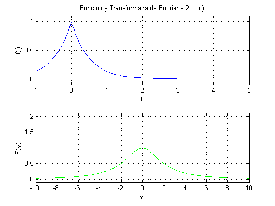
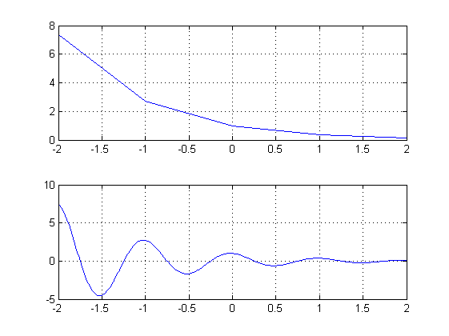
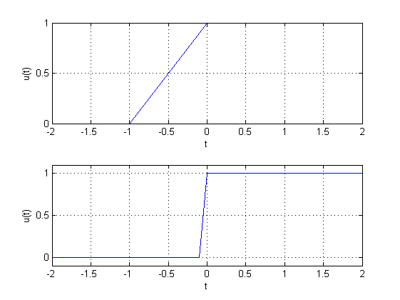
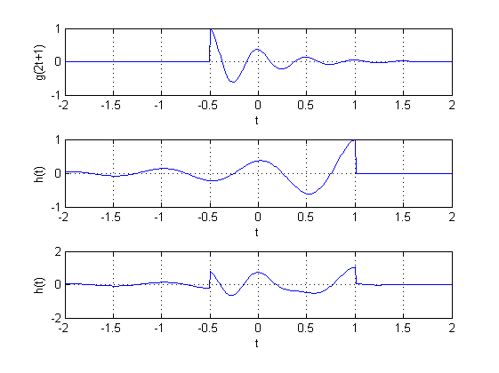

PRÁCTICA 3: Señales en tiempo continuo
- Andoney Valdez Daniel
- Castillo Silva Marlene Vanessa
Contents
INTRODUCCION
¿Qué es Matlab? Matlab significa "Matrix Laboratory" o en español "Laboratorio de la idea de ayudar a los estudiantes para que ya no programaran una serie de algoritmos para llevar a cabo alún análisis númerico. Actualmente Matlab es distribuido por MathWorks, Inc desde el año 1984. Existen softwares que son parecidos a Matlab con la diferencia que son libres que son:
- Octave el cual es un entorno orientado al cálculo numérico científico. Además, cuenta con herramientas para la resolución de problemas de cálculo numérico lineales y no lineales: álgebra lineal, aproximación de raíces de ecuaciones, integración numérica, integración de ecuaciones diferenciales, etc., así como para la representación de gráficos en dos y tres dimensiones. Aquí puedes consultar más información sobre este software: https://rodin.uca.es/xmlui/bitstream/handle/10498/18932/Octave_Calculo_Numerico.pdf?sequence=1&isAllowed=y
- Python es un lenguaje de programación de alto nivel, el cual es compatible con el lenguaje C. Al ser un software de código abierto y gratuito. Aquí puedes consultar más informacón sobre este software: http://colenak.ptkpt.net/_lain.php?_lain=3721
EJERCICIO 1
fun1;
EJERCICIO 2
%w=-2:0.01:2; %figure(1) %fu1;
EJERCICIO 3
figure(2) TF;
EJERCICIO 4
M 1.1 Inline Functions
f = @(t) exp(-t).*cos(2*pi*t); figure(3) subplot (2,1,1) t=(-2:2); title(' f(t) = e(-t) cos (2*pi*t) para t = (-2:2)'); xlabel('t'); ylabel('f(t)'); plot(t,f(t)) grid on; subplot (2,1,2) t=(-2:0.01:2); title(' f(t) = e(-t) cos (2*pi*t) para t = (-2:0.01:2)') xlabel('t'); ylabel('f(t)'); plot(t,f(t)); grid; % M 1.2 Relational Operators and the Unit Step Function figure(4) subplot(2,1,1) u = @(t) t>=0; t=(-2:2); plot (t,u(t)); xlabel('t'); ylabel('u(t)'); grid; subplot(2,1,2) t=(-2:0.1:2); plot (t,u(t)); xlabel('t'); ylabel('u(t)'); axis ([-2 2 -0.1 1.1]); grid on; % M 1.3 Visualizing Operations on the Independent Variable g = @(t) exp(-t).*cos(2*pi*t).*(t>=0); figure (5) subplot (3,1,1) t = (-2:0.01:2); plot(t,g(2*t+1)); xlabel('t'); ylabel('g(2t+1)'); grid; subplot (3,1,2) t = (-2:0.01:2); plot(t,g(-t+1)); xlabel('t'); ylabel('h(t)'); grid; subplot (3,1,3) h= g(2*t + 1) + g(-t + 1); plot(t,h); xlabel('t'); ylabel('h(t)'); grid; % M1.4 Numerical Integration and Estimating Signal Energy x = @(t)exp(-t).*((t>=0)&(t<1)); t = (0:0.01:1); E_x =sum(x(t).*x(t)*0.01) ; x_squared = @(t) exp(-2*t).*((t>=0)&(t>1)); g_squared = @(t) exp(-2*t).*(cos(2*pi*t).^2).*(t>=0); t = (0:0.001:100); E_g = sum(g_squared(t)*0.001) ;  
EJERCICIO 6
energia=@(t) (t.^2); % problema 1 energiap1=integral(energia,0,2); energiap1_2=integral(energia,0,2); s1=energiap1_2+energiap1; fprintf('\nLa suma de las energias problema 1 es: %f',s1); % problema 2 energiap2= integral (@(t)energia(sin(t)),-pi,pi); energiap2_1=integral (@(t)energia(2*t),-pi/2,pi/2); s2=energiap2+energiap2_1; fprintf('\nLa suma de las energias problema 2 es: %f',s2);
La suma de las energias problema 1 es: 5.333333 La suma de las energias problema 2 es: 13.477018
EJERCICIO 7
T=2*pi; potencia=@(t) (1/T)*(t.^2); % problema 1 pp1=integral(potencia,0,2); pp1_2=integral(potencia,0,2); sp1=pp1_2+pp1; fprintf('\nLa suma de las potencias problema 1 es: %f',sp1); % problema 2 potenciap2=integral(@(t)energia(sin(t)),-2*pi,2*pi); potenciap2_1= integral(@(t)energia(2*t),-pi,pi); sp2=potenciap2+potenciap2_1; fprintf('\nLa suma de las potencias problema 2 es: %f',sp2);
La suma de las potencias problema 1 es: 0.848826 La suma de las potencias problema 2 es: 88.966590
REFERENCIAS
https://ocw.mit.edu/courses/electrical-engineering-and-computer-science/6-094-introduction-to-matlab-january-iap-2010/lecture-notes/MIT6_094IAP10_lec02.pdf https://la.mathworks.com/help/matlab/matlab_prog/anonymous-functions.html